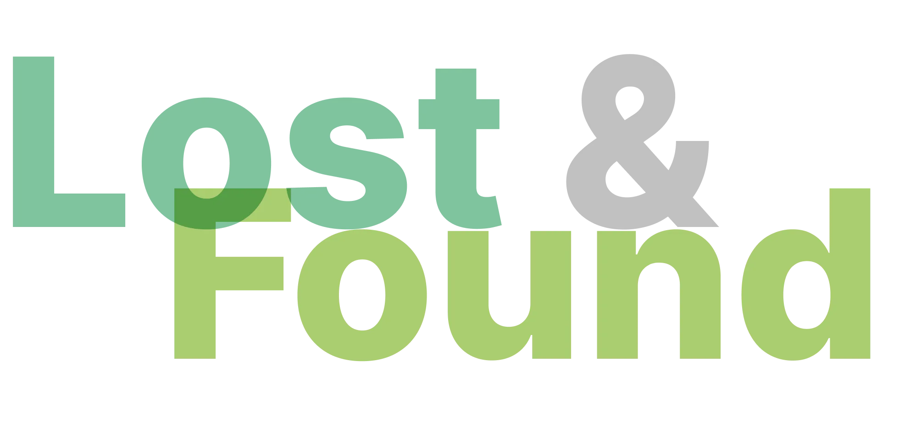
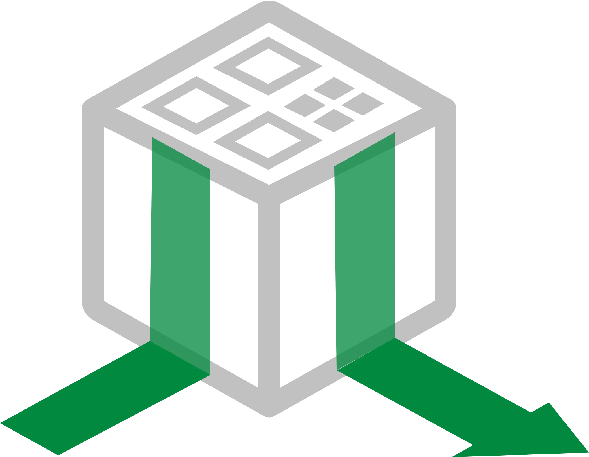
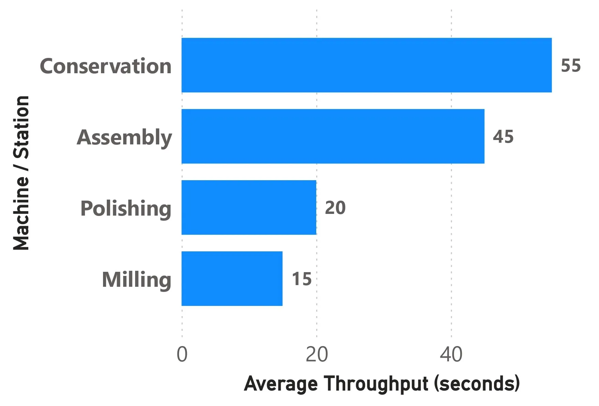
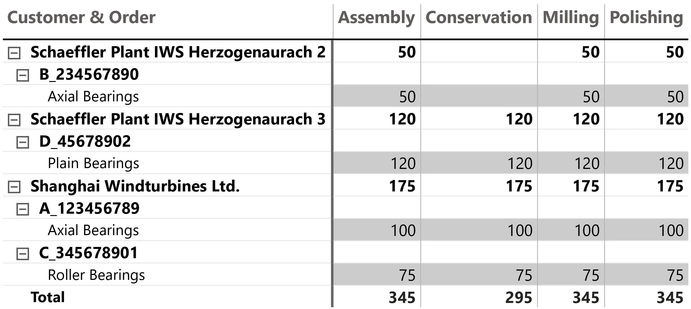
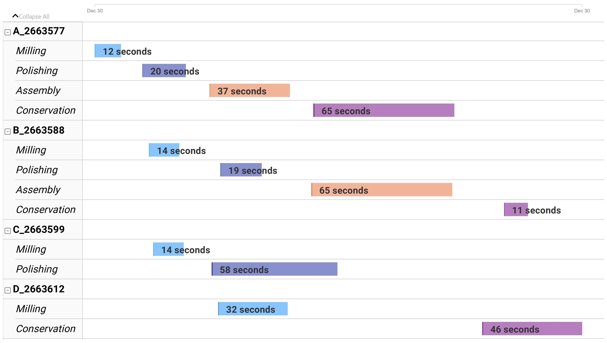

Problem
Manual QR scanning at each production-line station created an automation opportunity.
HACK|BAY Schaeffler Challenge

Lost & Found was a hackathon-winning concept created by a team of five at ZOLLHOF Tech Incubator in Nuremberg. The team prototyped and presented a crate-tracking solution for Schaeffler and won the "Best Use Case" prize of EUR 1500.


The problem statement was to automate the scanning of QR codes at each station in a production line.
The team focused the idea around crate visibility: identify where crates move, reduce manual scanning effort, and make the production-line status easier to inspect through visual dashboards.
The topic intro slides came from the Schaeffler challenge brief and framed the production-line tracking problem before the team developed Lost & Found.


Manual QR scanning at each production-line station created an automation opportunity.
Frame the solution around crate tracking and station visibility.
Build enough of the flow to explain how crates are identified and followed.
Visualise tracking information so the use case can be understood quickly.
Package the concept into a clear finalist presentation.
The dashboard screens were the visual outputs of the Lost & Found concept, showing how tracking information could become readable production-line insight.



The team won "Best Use Case" and received EUR 1500 for a working concept that made the crate-tracking problem visible, understandable, and pitch-ready in a short hackathon format.
If you like what you see and want to work together, get in touch!
prathikp.prasad@gmail.com